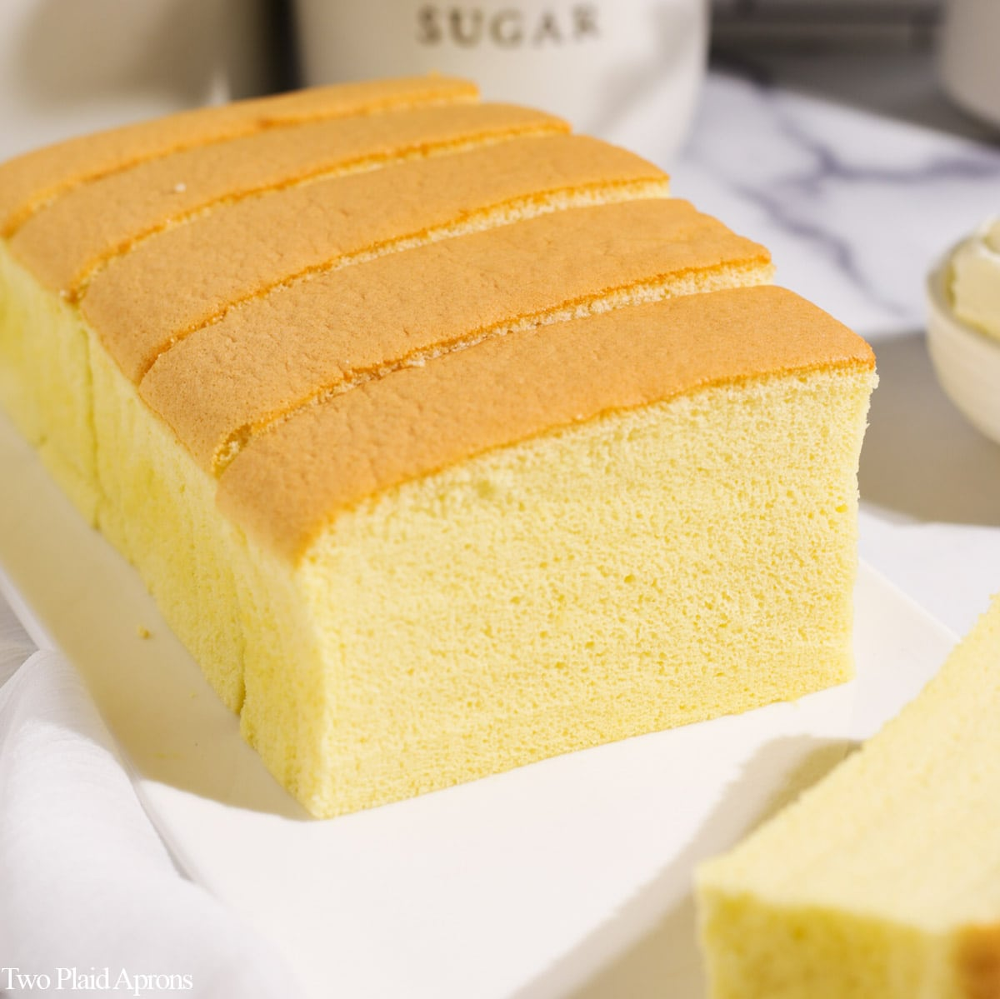

Taiwanese Castella Cake

Taiwanese castella cake, a light and fluffy sponge cake that can be served warm or cold.
Cake Ingredients
- ⅓ cup vegetable oil
- ⅓ cup milk
- ¾ cup cake flour, sifted
- 6 large egg yolks
- ¼ teaspoon vanilla extract
- ⅛ teaspoon salt
- 6 large egg whites
- ⅓ cup white sugar
Directions
- Preheat the oven to 300 degrees F (150 degrees C). Line a 9-inch square cake pan with enough parchment paper so that it overhangs all four sides of the pan; this will make removal of the cake easier.
- Heat oil and milk in a small pan until warm. Pour sifted cake flour into the pan and whisk until combined; batter will be pretty sticky. Whisk in egg yolks, one at a time. Add vanilla and salt and whisk until well combined. Make sure there are no air bubbles.
- Beat egg whites in a glass, metal, or ceramic bowl until foamy. Gradually add sugar, continuing to beat until stiff peaks form.
- Pour egg yolk mixture on top of the stiff egg whites. Gently fold everything together using a spatula until batter is light and foamy. Slowly pour batter into the prepared cake pan. Knock cake pan against the kitchen counter twice to remove all air bubbles and smooth out the top with a spatula.
- Set the baking dish into a deep baking pan. Add enough hot water to the baking pan so that the baking dish sits 1/2-inch deep in water.
- Bake in the preheated oven in the hot water bath until the cake is set, 45 to 50 minutes. Remove from oven and lift cake from the pan using the parchment paper. Serve warm or allow to cool before serving.